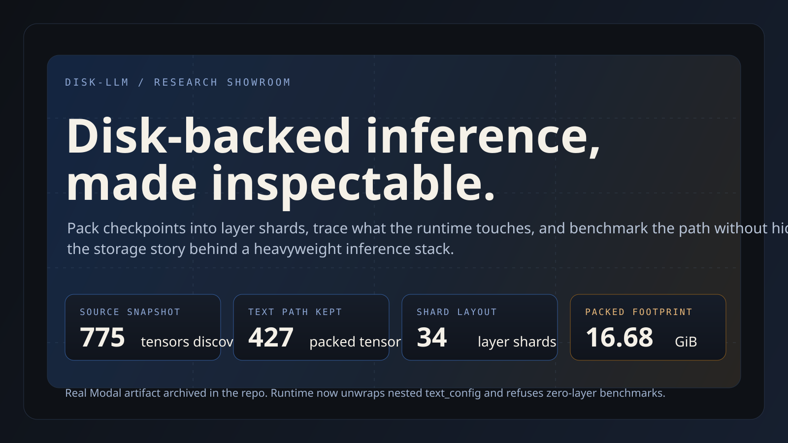
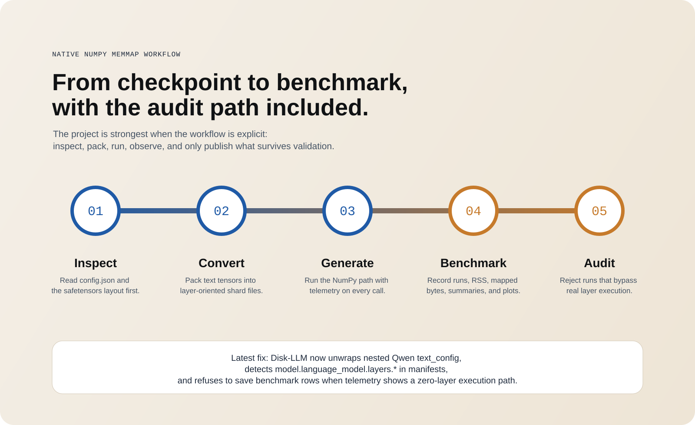
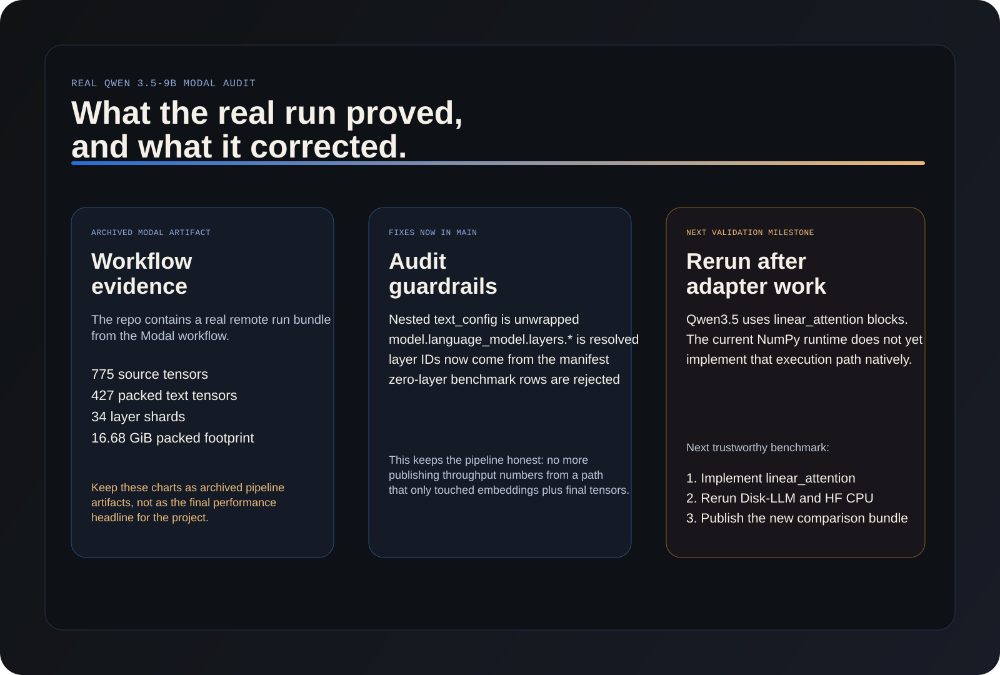
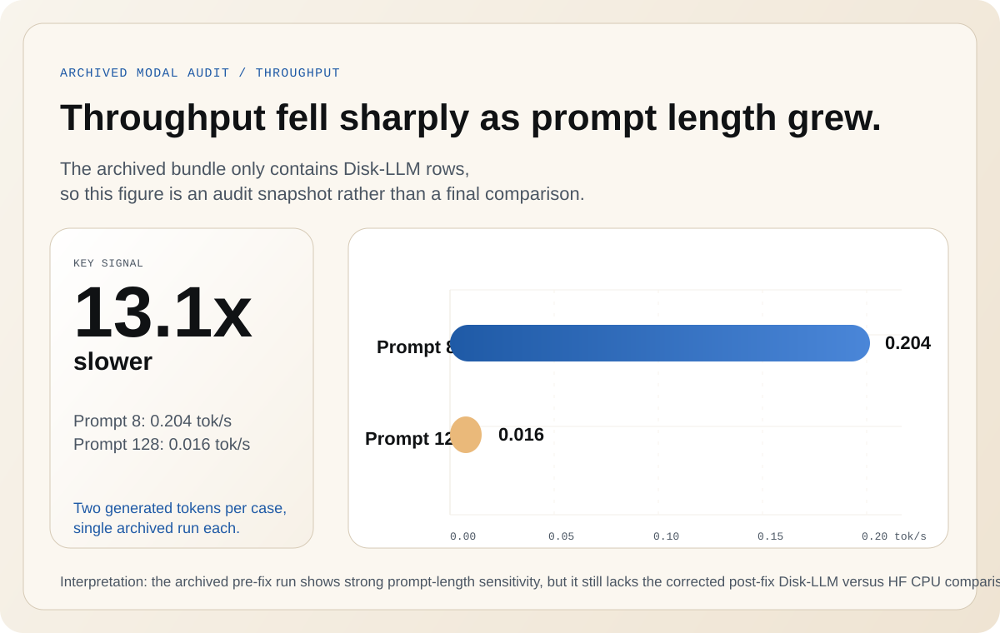
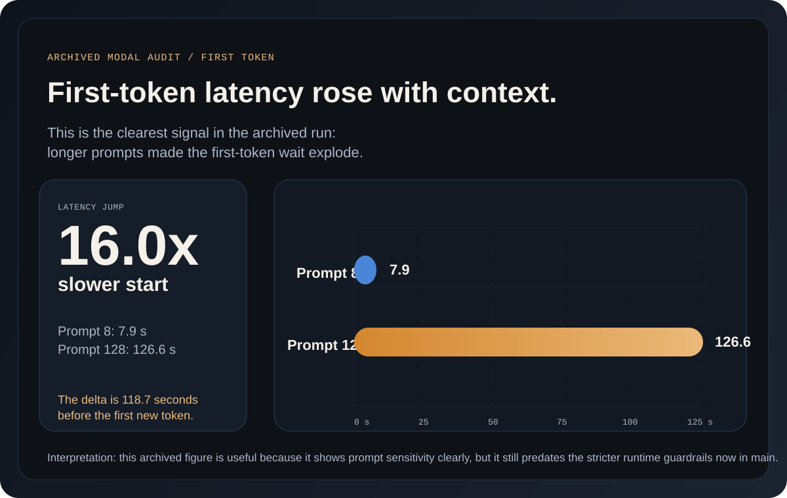
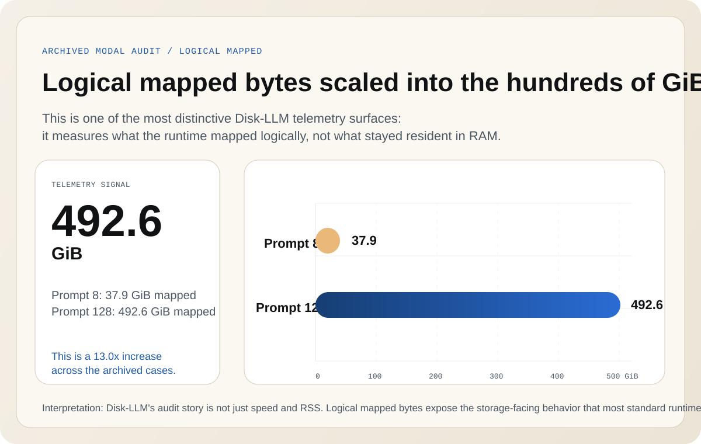
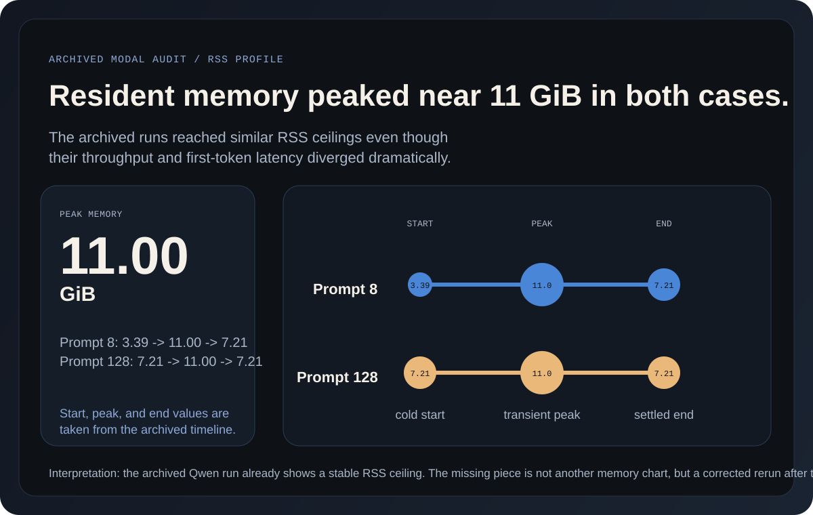

Disk-backed inference, made inspectable.
Disk-LLM repacks checkpoints into layer-oriented memmap shards, exposes runtime telemetry, and keeps the benchmarking story explicit. It is built for people who want to understand the storage path, not hide it behind a black-box serving stack.
text_config, resolves model.language_model.layers.*, and refuses zero-layer benchmark output. That means the project now protects itself against the exact misleading run shape the first real Modal artifact exposed.

What is solid, what is still being audited.
The conversion and inspection pipeline is real. The Modal workflow is real. The benchmark harness is real. The part still marked experimental is the native Qwen 3.5 linear_attention runtime path, which should be implemented and rerun before the repo promotes final performance claims.
The project is strongest when the pipeline is visible.
Disk-LLM is not just a runtime. It is an inspect / convert / generate / benchmark / audit loop. The latest fixes reinforce that philosophy by preventing benchmark export when telemetry does not show real layer execution.

What is genuinely distinctive about Disk-LLM.
The project becomes compelling when it is judged as a research system rather than a generic inference stack. These are the parts that make Disk-LLM novel inside that framing.
Disk-LLM repacks checkpoints into layer-oriented shard files so the runtime layout is deliberate, page-friendly, and easy to inspect.
The NumPy runtime works directly from memmap-backed shards, which keeps the storage path visible instead of hiding it in a heavyweight serving engine.
Logical bytes mapped, tensors touched, first-token latency, and per-layer timing data turn benchmark runs into auditable artifacts.
The repo now rejects zero-layer benchmark exports, which means a broken execution path is less likely to become a polished but misleading headline.
The real Qwen 3.5 Modal run changed the repo.
The archived artifact bundle showed a genuine remote run against Qwen/Qwen3.5-9B, but it also revealed that the model uses a multimodal wrapper architecture with nested text config and a linear_attention execution path. The repo now records that honestly instead of quietly treating a zero-layer path as a finished benchmark.

Audit figures retained as workflow evidence, not the final headline.
The archived Modal result bundle is still useful because it proves the repo can export CSVs, Markdown summaries, and figures from a real remote run. These redesigned figures are based on the actual archived numbers, but they should still be read as pre-fix audit evidence until the Qwen linear_attention runtime path is implemented and the corrected Disk-LLM versus HF comparison is rerun.




Where the project stands right now.
The repo already works as a converter, inspector, benchmark harness, and Modal-ready research workflow. The next real milestone is not "more polish," but a correct native adapter for Qwen 3.5 linear attention followed by a new benchmark publication pass.
Checkpoint inspection, tensor discovery, text-only packing, and manifest validation are in good shape.
CSV export, plotting, Modal run orchestration, and repeatable benchmark artifacts are already wired.
Zero-layer benchmark rows are now rejected instead of being silently written to result bundles.
The real Qwen 3.5 text path still needs a native adapter before the repo should promote final performance claims.
The next public benchmark should be a post-fix Disk-LLM vs HF CPU comparison, not the archived pre-fix artifact.
Once the rerun lands, the README and site can promote the new figures as the authoritative benchmark story.